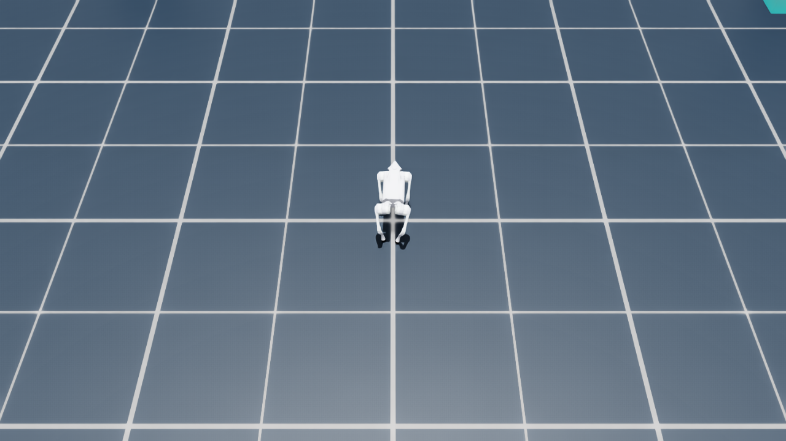
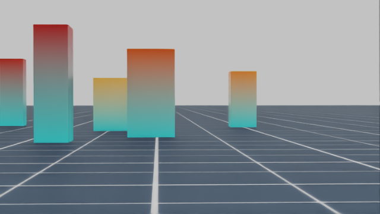
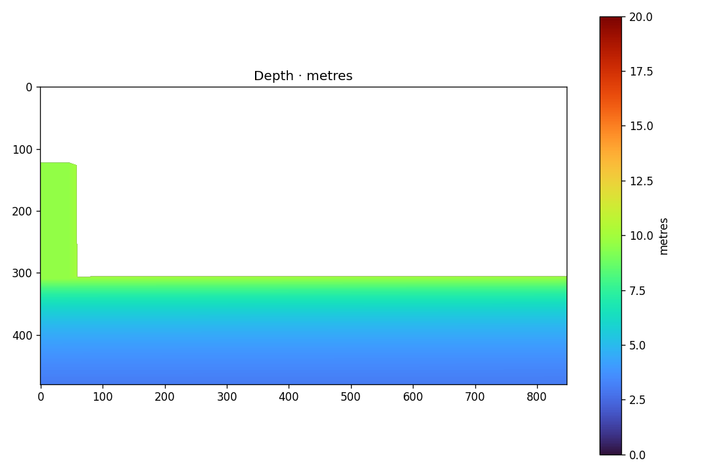
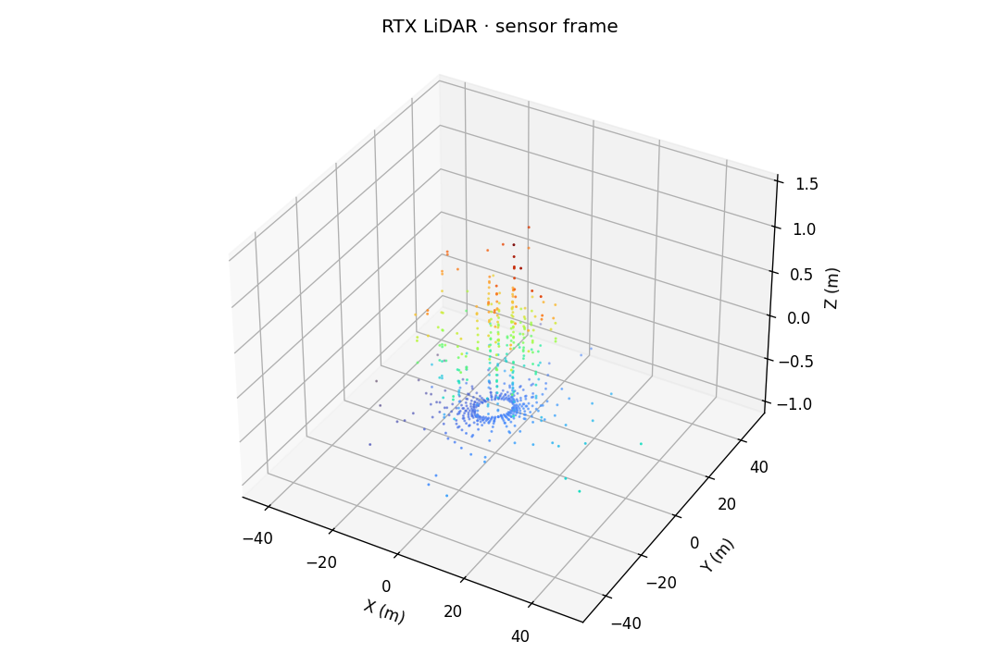
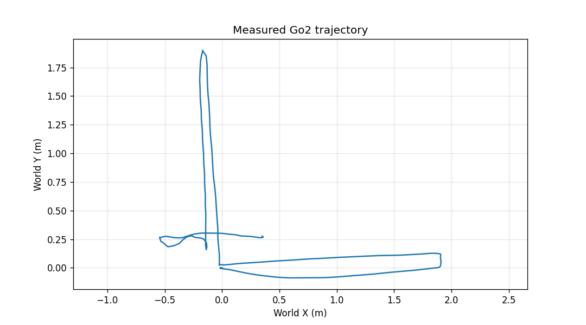

Go2 三模块接口与仿真符合性报告
本报告梳理 Isaac Sim 仿真、FAST-LIVO2/SC-PGO 建图与 localizer 定位、NeuPAN 导航三条链路的架构、输入输出、参数、坐标系和真实数据差异。结论严格区分源码配置、真实 rosbag、仿真验收和未做的端到端测试。
/scan，也没有完成 /cmd_vel2 驱动仿真的闭环。因此不能把当前状态称为三模块全链路通过。1. 三模块关系
证据：仿真 ros2/go2_file_bridge_wsl2.py；建图配置 mid360.yaml；定位配置 localizer.yaml；导航启动链 sim_platform_start_verify.sh。
2. 各模块接口
仿真模块
职责：提供物理世界、机器人状态、传感器数据和低层命令入口。
输出：/livox/lidar（PointCloud2，10 Hz，xyz，frame 为 unitree_go2/lidar）、/livox/imu（Imu，200 Hz，frame 为 unitree_go2/mid360_imu）、/unitree_go2/odom、图像、TF。
限制：当前没有 /scan、/slam/lidar_pose，也没有订阅 /cmd_vel2。
建图与定位
建图：FAST-LIVO2 使用 LiDAR + IMU 紧耦合，SC-PGO 做关键帧回环和全局优化，输出 GlobalMap.pcd。
定位：加载先验地图，使用实时局部点云/IMU和 /initialpose 初始化，输出 map 坐标下的 /slam/lidar_pose。
当前配置：img_en=0、lidar_type=7、scan_line=4、wheel odom关闭。
导航模块
前端：processor 每0.1 s累积点云，按 body-lidar 外参转换并投影为约1440束 LaserScan。
规划：track2 订阅 /slam/lidar_pose、/scan、/clicked_path，用 NeuPAN 输出 /cmd_vel2。
命令：[linear.x, linear.y, angular.z] = [vx, vy, omega]，规划频率默认10 Hz。
真实模块输入参数
| 输入 | 消息/频率 | 关键字段和参数 | 来源/状态 |
|---|---|---|---|
/livox/lidar | sensor_msgs/msg/PointCloud2，约10 Hz | 实测字段 x,y,z,intensity,tag,line,timestamp；FAST-LIVO2为 lidar_type=7、scan_line=4、blind=0.1 m | 真实建图 bag、Mid-360导航 bag已确认；旧文档写 CustomMsg |
/livox/imu | sensor_msgs/msg/Imu，约200 Hz | imu_int_frame=30；acc_cov=0.5、gyr_cov=0.3；时间偏移0 | 真实 bag已确认；frame 样本为 livox_frame |
/initialpose | PoseWithCovarianceStamped | RViz 2D Pose Estimate；在 map 中给出初始位置和朝向 | 定位初始化入口 |
/scan | sensor_msgs/msg/LaserScan，processor约10 Hz | 角度[-pi,pi]，增量约0.25°，范围0.1-100 m，高度[-0.01,0.7] m，累计0.1 s | 导航 processor 源码确认；仿真未验证 |
/clicked_path | nav_msgs/msg/Path，默认10 Hz | frame 默认 map；JSON waypoint按 segment length 插值 | 路径发布器源码确认 |
| 规划器参数 | YAML | step_time=0.1 s，max_speed=[0.4,0.1,0.6]，mecanum footprint约0.7x0.35 m | 导航 YAML 确认 |
| localizer参数 | YAML | cloud_topic=/cloud_registered_local，odom_topic=/aft_mapped_to_init，imu_odom_topic=/LIVO2/imu_propagate，map/local frame为map/lidar，配置update_hz=20，GICP开启 | 运行配置确认；频率为配置值，非本次实测值 |
3. 参数对比
| 参数 | 建图/定位基准 | 导航链路 | 仿真当前值 |
|---|---|---|---|
| LiDAR消息类型 | 实测 PointCloud2；mid360.yaml lidar_type=7 | processor 同时兼容 CustomMsg/PointCloud2，PointCloud2只读xyz | PointCloud2，只发xyz；消息大类正确，字段待补/验证 |
| LiDAR/IMU频率 | 约10/200 Hz | 点云窗口0.1 s；规划器10 Hz | 点云约10.009 Hz，IMU约200 Hz；仿真时间证据通过 |
| 相机 | 配置1280x1024，scale 0.5，缩放后约640x512；img_en=0 | 当前导航不直接使用相机 | RGB 640x360、depth 848x480、30 Hz；当前不阻塞 lidar-only 主链 |
| LiDAR frame | 真实样本 livox_frame | raw保留传感器 frame；aligned 和 scan 写为 body | unitree_go2/lidar；需显式 frame/TF 适配 |
| body-lidar外参 | mapping 内部另有 lidar-IMU [-0.011,-0.02329,0.04412]、R=I | [0.187,0,0.0803]，绕Y 13° | LiDAR位置 [0.2,0,0.2]，rpy全0；不等价 |
| IMU语义 | 真实样本 orientation identity、covariance 0 | 导航不直接消费 IMU，定位/建图消费 | orientation unavailable，covariance[0]=-1；加速度含重力，理想无噪声 |
| 全局坐标 | map由建图运行定义 | pose/path/map使用 map，机器人 TF使用 body | 真值使用 odom + unitree_go2/base_link；不能直接当 map |
4. 差异分级
| 等级 | 问题 | 判断 | 仿真侧动作 |
|---|---|---|---|
| 高 | 没有真实 localizer 输出和导航命令闭环 | 当前无法证明定位和导航功能 | 先跑 FAST-LIVO2 → map → localizer → processor → NeuPAN，再接命令适配 |
| 高 | frame/TF不一致 | topic名一致不代表坐标语义一致，可能造成重复变换或定位失败 | 提供 map/body/lidar_livox 适配，保留 raw/aligned 的明确 frame |
| 中高 | 仿真点云只有xyz | processor可读，但 FAST-LIVO2深层时间/扫描线依赖尚未实测 | 先做实测；失败时补 timestamp、line、intensity、tag 字段或适配器 |
| 中 | 外参不同 | mapping lidar-IMU、navigation body-lidar、simulation mount 是三种语义 | 配置集中化并记录标定来源，不能互相覆盖 |
| 中 | 相机内参/分辨率不同 | 当前 img_en=0，暂不阻塞；启用视觉时会直接影响投影 | 视觉模式单独标定 D435 RGB/深度、畸变和同步 |
| 中 | 仿真 LiDAR publisher depth=1，真实 bag depth=256 | 慢消费者时存在丢帧风险 | 全链路运行时检查频率、时间戳、队列和处理耗时 |
| 高 | track2 位姿外参注释与实现不一致；Pose-to-TF 又将定位 pose 直接当作 body pose | _get_robot_pose() 中 dx/dy/yaw offset 都是0；若输入 pose 是 LiDAR frame，则 planner/body TF 存在坐标语义风险 | 不改只读导航代码；通过接口定义和仿真适配器验证 LiDAR pose 到 body pose 的转换是否需要且只做一次 |
5. 仿真证据图片





6. 符合性矩阵
| 检查项 | 结果 | 证据与边界 |
|---|---|---|
| PointCloud2 topic大类 | 部分符合 | 与真实 Mid-360 bag、lidar_type=7一致；仿真字段只有xyz，frame未对齐。 |
| LiDAR 10 Hz | 仿真已验收 | 约10.009 Hz；尚不等于 FAST-LIVO2已处理成功。 |
| IMU 200 Hz | 频率通过 | 约200 Hz且无大于5 ms间隔；噪声、covariance和orientation语义不同。 |
| D435图像 | 仿真已验收 | 渲染和内参自洽，但和视觉配置不一致；当前 img_en=0。 |
| FAST-LIVO2建图 | 未验证 | 尚未用仿真点云/IMU生成 GlobalMap.pcd。 |
| localizer定位 | 未验证 | 尚未完成 GlobalMap + initialpose → /slam/lidar_pose。 |
| processor与/scan | 未验证 | 尚未验证仿真字段、外参、高度过滤、frame和窗口频率。 |
| NeuPAN导航闭环 | 未验证 | 缺少真实定位输出和可消费的scan；未完成路径到命令闭环。 |
| /cmd_vel2驱动仿真 | 未验证 | 仿真当前入口是 /unitree_go2/cmd_vel，需要正式适配器和watchdog。 |
| 真实地图与仿真环境一致 | 不满足 | 当前障碍物场景与真实 GlobalMap.pcd不是同一几何环境。 |
7. 建议的下一步闭环
01 · 可重复巡航
增加固定 waypoint、矩形闭环或预设走廊控制器，输出仿真控制入口的三自由度速度，并保存轨迹、仿真时间和传感器时间。
02 · 先验证建图
使用 PointCloud2 + /livox/imu 启动 FAST-LIVO2。若因字段或时间语义失败，再针对 timestamp/line/intensity/tag 做最小适配。
03 · 再验证定位
加载仿真生成的 GlobalMap，确认 /initialpose、map→body TF、/slam/lidar_pose 和 /slam/points 的坐标一致性。
04 · 最后接导航
运行 processor 生成 /scan，启动 NeuPAN，再实现 /cmd_vel2 → /unitree_go2/cmd_vel、限幅和超时停车，记录闭环结果。